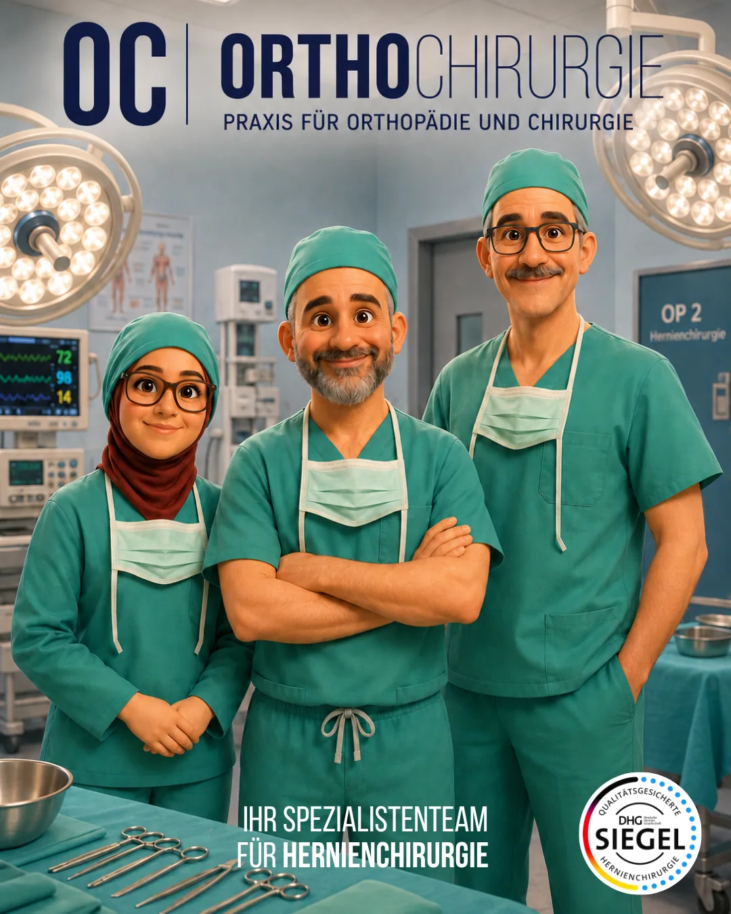
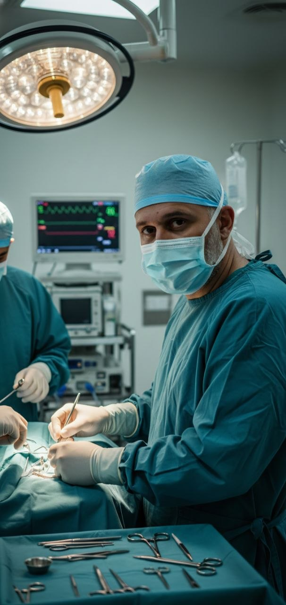
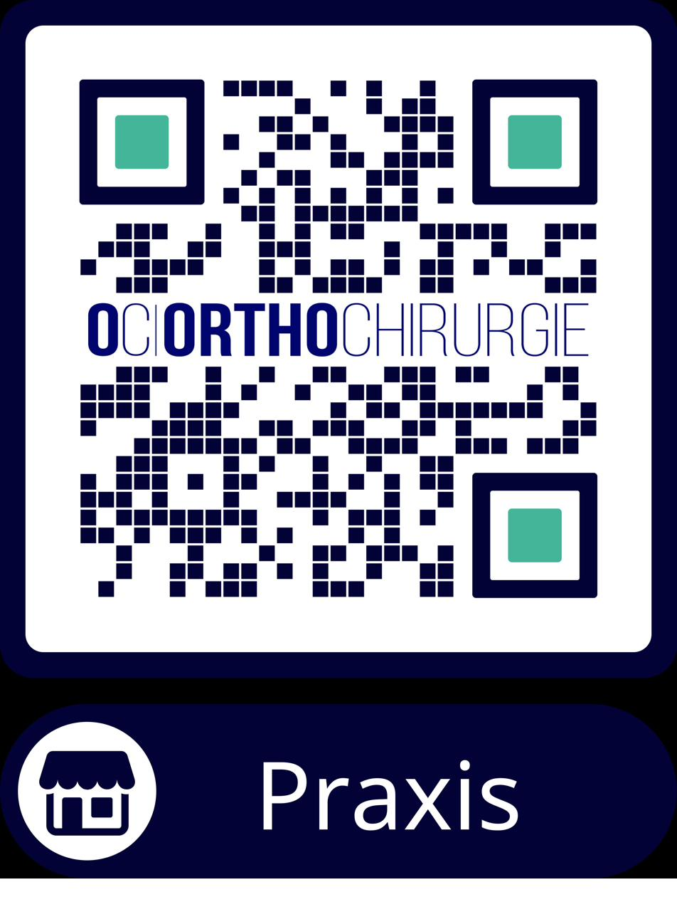

Praxis
Standort Ludwigshafen
Berthold-Schwarz-Str. 26
67063 Ludwigshafen-Friesenheim
Hier finden Sie Antworten auf Ihre Fragen vor und nach einer Hernienoperation.

Diese Anzeichen deuten auf einen medizinischen Notfall hin:
→ Suchen Sie in diesem Fall umgehend die nächste Notaufnahme auf.
Notruf 112 anrufen
Facharzt für Allgemein- und Viszeralchirurgie
Als zertifizierter Hernienoperateur und Mitglied der Deutschen Herniengesellschaft (DHG) habe ich mich auf die operative Behandlung sämtlicher Hernienformen spezialisiert. In unserem zertifizierten Hernienzentrum verbinden wir modernste minimal-invasive Operationstechniken mit individueller Patientenversorgung.
Schwerpunkte meiner Tätigkeit liegen in der laparo/endoskopischen Hernienchirurgie (TEP, TAPP, eTEP, E-MILOS, Lap IPOM), in der Versorgung komplexer Narben- und Rezidivhernien sowie in nervenerhaltenden Operationstechniken zur Vermeidung chronischer Schmerzen.
Hernien können an verschiedenen Stellen der Bauchwand auftreten. Hier finden Sie eine Übersicht der häufigsten und seltensten Formen.
Übersichtlich nach Themen geordnet – auf der Basis aktueller Leitlinien und langjähriger klinischer Erfahrung.
Die Informationen auf dieser Seite dienen als allgemeine Orientierung und ersetzen nicht die individuelle ärztliche Beratung. Ihre persönlichen Anweisungen nach der Operation haben immer Vorrang.
Ihre Frage ist noch offen? Schreiben Sie uns bei nicht dringlichen Anliegen.
info@oc-orthochirurgie.comE-Mail ist nicht für akute Beschwerden oder Notfälle geeignet.
Medizinisch geprüft von Dr. med. Tarek Osman · Stand: September 2026
Wir sind für Sie an zwei Praxisstandorten und in unseren Operationskliniken erreichbar.
Berthold-Schwarz-Str. 26
67063 Ludwigshafen-Friesenheim
Oggersheimer Straße 42
67112 Mutterstadt
Ludwigshafen am Rhein
Ambulante Hernienchirurgie
68723 Schwetzingen
Ambulante & stationäre Hernienchirurgie
Für nicht dringliche Anfragen, Befundübermittlung oder Rückfragen erreichen Sie uns am einfachsten per E-Mail.
Vereinbaren Sie bequem online einen Wunschtermin bei Dr. med. Tarek Osman – rund um die Uhr verfügbar.

Scannen Sie den QR-Code, um zu unseren Praxisinformationen, Online-Terminen und Wegbeschreibung zu gelangen.
Alle Materialien zum Herunterladen. Sie können sie bequem zu Hause ausdrucken und ausfüllen.
Überörtliche Berufsausübungsgemeinschaft für Chirurgie und Orthopädie (Gemeinschaftspraxis) in der Rechtsform der Gesellschaft bürgerlichen Rechts (GbR)
Solange Jöhnk, Irfan Halaceli, Dr. med. Tarek Osman und Dr. med. Jan-Henrik Dieckmann
Berthold-Schwarz-Str. 26, 67063 Ludwigshafen
Tel.: 0621 53399050 (LU) | 06234 9288500 (MU)
E-Mail: info@oc-orthochirurgie.com
Kassenärztliche Vereinigung Rheinland-Pfalz
Isaac-Fulda-Allee 14
55124 Mainz
Rechtlich maßgeblich ist die deutsche Fassung.
OC | OrthoChirurgie GbR
Berthold-Schwarz-Str. 26, 67063 Ludwigshafen
E-Mail: info@oc-orthochirurgie.com
Weitere Angaben finden Sie im Impressum.
Diese Website ist ein reines Informationsangebot für Patientinnen und Patienten. Sie enthält keine Kontaktformulare, keine Benutzerkonten, keine Werbung, keine Analyse- oder Tracking-Werkzeuge und setzt keine Cookies. Die Suche in den häufigen Fragen läuft vollständig in Ihrem Browser – Ihre Suchbegriffe werden nicht übertragen oder gespeichert.
Beim Aufruf der Website verarbeitet der Hosting-Anbieter technisch notwendige Daten (z. B. IP-Adresse, Datum und Uhrzeit des Abrufs, aufgerufene Datei, Browsertyp), um die Seite auszuliefern und die Sicherheit des Betriebs zu gewährleisten. Rechtsgrundlage ist Art. 6 Abs. 1 lit. f DSGVO (berechtigtes Interesse an einem sicheren und stabilen Betrieb). Die Website wird über GitHub Pages der GitHub Inc., 88 Colin P. Kelly Jr. Street, San Francisco, CA 94107, USA, bereitgestellt. GitHub ist unter dem EU-US Data Privacy Framework zertifiziert. Weitere Informationen: Datenschutzerklärung von GitHub.
Wenn Sie eine Sprache auswählen, wird diese Auswahl im lokalen Speicher Ihres Browsers (localStorage) abgelegt, damit die Seite beim nächsten Besuch in derselben Sprache erscheint. Diese Information verlässt Ihr Gerät nicht und kann jederzeit über die Browsereinstellungen gelöscht werden. Rechtsgrundlage ist § 25 Abs. 2 Nr. 2 TDDDG (unbedingt erforderliche Speicherung für einen von Ihnen gewünschten Dienst).
Alle Schriftarten sind lokal auf dieser Website gespeichert. Beim Seitenaufruf wird keine Verbindung zu Servern von Google oder anderen Schriftanbietern aufgebaut.
Die Website enthält Links zu externen Angeboten, etwa Doctolib (Terminbuchung), Google Maps, Google-Bewertungen, Instagram, TikTok sowie den Websites der Praxis und der Kliniken. Diese Links sind einfache Verweise: Erst wenn Sie einen Link anklicken, werden Sie zum jeweiligen Anbieter weitergeleitet, und es gilt dessen Datenschutzerklärung. Vorher werden keine Daten an diese Anbieter übertragen.
Wenn Sie uns per E-Mail oder Telefon kontaktieren, verarbeiten wir Ihre Angaben ausschließlich zur Bearbeitung Ihres Anliegens (Art. 6 Abs. 1 lit. b DSGVO bzw. bei Gesundheitsdaten Art. 9 Abs. 2 lit. h DSGVO). Bitte beachten Sie, dass unverschlüsselte E-Mails nicht vollständig vor dem Zugriff Dritter geschützt sind. Senden Sie sensible Gesundheitsdaten daher möglichst nicht per einfacher E-Mail.
Sie haben das Recht auf Auskunft (Art. 15 DSGVO), Berichtigung (Art. 16), Löschung (Art. 17), Einschränkung der Verarbeitung (Art. 18), Datenübertragbarkeit (Art. 20) sowie Widerspruch gegen die Verarbeitung (Art. 21 DSGVO). Wenden Sie sich dazu an die oben genannte E-Mail-Adresse.
Sie haben außerdem das Recht, sich bei einer Datenschutz-Aufsichtsbehörde zu beschweren, zum Beispiel beim Landesbeauftragten für den Datenschutz und die Informationsfreiheit Rheinland-Pfalz, Postfach 30 40, 55020 Mainz, www.datenschutz.rlp.de.
Stand: September 2026
Bei einem Leistenbruch drücken sich Eingeweide, wie zum Beispiel der Dünndarm, durch eine natürliche Schwachstelle der Bauchwand direkt in den Leistenkanal.
Es gibt nicht die eine Ursache; oft spielen verschiedene Risikofaktoren zusammen:
In der modernen Bruchchirurgie wird jeder Patient individuell versorgt. Die Wahl des Verfahrens hängt von der Größe und Form des Bruches sowie den Ansprüchen des Patienten ab. Dabei orientieren wir uns in der OC | OrthoChirurgie an den Leitlinien der europäischen Herniengesellschaft.
Es stehen grundsätzlich zwei Wege zur Verfügung:
Nicht jeder Bruch muss mit einem Netz verstärkt werden. Bei einer offenen Operation (ca. 5–7 cm langer Schnitt) wird der Bruchsack in die Bauchhöhle zurückgebracht. Die Bruchlücke wird plastisch mit dem eigenen Gewebe des Patienten gedeckt.
Hier wird die Schwachstelle zusätzlich durch ein spezielles Kunststoffnetz stabilisiert.
Bei einem Bruch (Hernie) drücken sich Eingeweide, beispielsweise der Dünndarm, durch eine Schwachstelle der Bauchwand nach außen. Im Falle einer Nabelhernie befindet sich diese Schwachstelle im Bereich des Nabels. Oft bildet sich dabei eine von außen sicht- und tastbare Vorwölbung.
Ein Bruch kann verschiedene Ursachen haben und durch zahlreiche Risikofaktoren gefördert werden:
In der modernen Bruchchirurgie wird jeder Patient individuell versorgt. Die Wahl des Verfahrens hängt von der Größe und Form des Bruches sowie den Ansprüchen des Patienten ab. Dabei orientieren wir uns in der OC | OrthoChirurgie an den Leitlinien der europäischen Herniengesellschaft.
Es stehen grundsätzlich zwei Wege zur Verfügung:
Eine Narbenhernie ist ein Bruch, der im Bereich einer früheren Operationsnarbe auftritt. Dabei drücken sich Eingeweide durch die dort entstandene Schwachstelle der Bauchwand. Es kann eine Vorwölbung entstehen, die von außen sichtbar und tastbar ist.
Die Entstehung wird durch eine Kombination aus lokaler Schwäche und innerem Druck begünstigt:
Die Entscheidung über eine Operation wird für jeden Patienten individuell getroffen. Wir orientieren uns in der OC | OrthoChirurgie an den Leitlinien der europäischen Herniengesellschaft. In der Regel muss eine Narbenhernie mittels Netzes versorgt werden. Eine Versorgung mittels Direktnaht ist oft mit einem sehr hohen Rezidivrisiko verbunden.
Das Verfahren wird passgenau nach Form und Größe des Bruches ausgewählt:
Berichte aus regionalen und überregionalen Medien über die Zertifizierung als Kompetenzzentrum für Hernienchirurgie und moderne minimalinvasive Operationsverfahren.